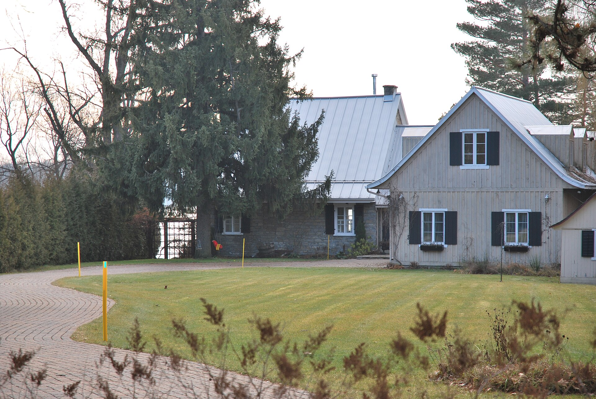
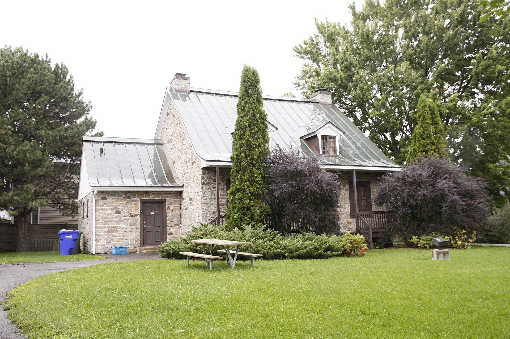
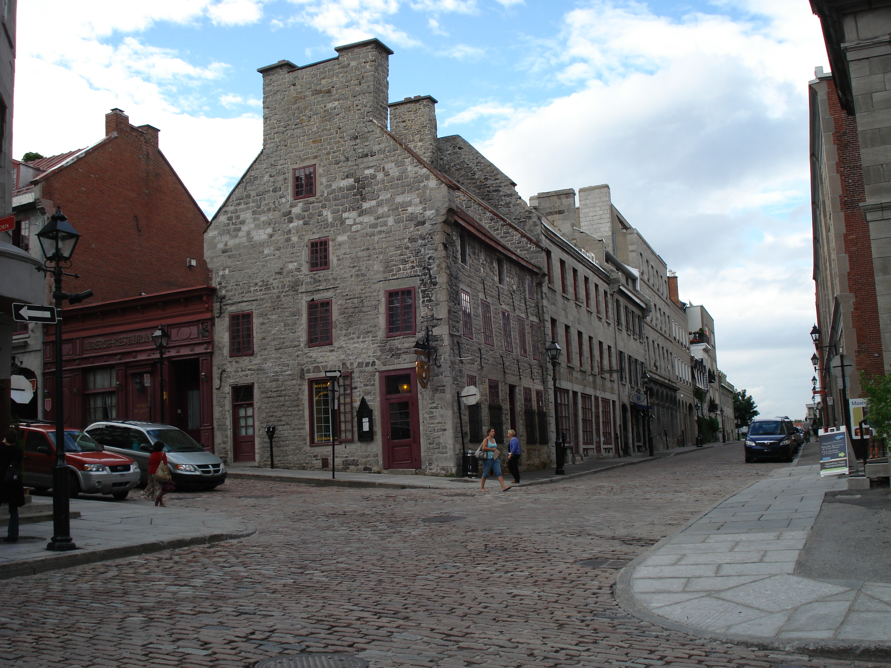

| Place | Local name | Phase years | Storeys | Roof | Window | Cladding | Garage |
|---|---|---|---|---|---|---|---|
| Baie-D'Urfé | Stone house of the French tradition La maison de pierre de tradition française | 1663 – 1760 | 1.5 | gabled | – | fieldstone | none |
| Charlesbourg (Trait-Carré) | Rural house of French inspiration La maison rurale d'inspiration française | 1665 – 1760 | 1.5 | gabled | – | wood-piece-sur-piece, fieldstone-rendered | – |
| Île d'Orléans | House of French inspiration La maison d'inspiration française | 1636 – 1760 | 1–1.5 | gabled-or-hipped-steep | vertical | fieldstone-rendered, wood | – |
| Lachine (borough of Montréal) | Stone house of the French tradition La maison de pierre de tradition française | 1663 – 1760 | 1.5 | gabled | – | fieldstone | none |
| Lévis | French-regime house (Régime français) Régime français | 1636 – 1780 | 1.5 | gabled-or-hipped | – | fieldstone, stucco-render, wood-clapboard, wood-vertical-board | – |
| Lévis | Franco-Québécois transitional house Franco-québécois | 1780 – 1861 | 1.5 | bellcast | – | fieldstone, stucco-render, wood-clapboard, wood-shingle | – |
| Pointe-Claire | Stone house of the French tradition La maison de pierre de tradition française | 1663 – 1760 | 1.5 | gabled | – | fieldstone | none |
| Québec City | One-storey rural house of French inspiration Maison rurale d’inspiration française | 1608 – 1760 | 1 | hipped | vertical | wood-piece-sur-piece, wood-board-vertical, stone, roughcast | – |
| Québec City | Urban stone house of French inspiration Maison urbaine d’inspiration française | 1608 – 1760 | 1–2 plus attic | gabled | vertical | stone, roughcast | – |
| Québec City | Franco-Québécois transition house Maison de transition franco-québécoise | 1760 – 1840 | 1.5 | gabled | vertical | stone, wood-piece-sur-piece, wood-clapboard, roughcast, stucco | – |
| Saint-Lambert | Traditional French and Québécois house La maison traditionnelle française et québécoise | 1700 – 1830 | 1.5 | gabled | vertical | stone, roughcast, wood | none |
| Vieux-Terrebonne | Stone house in the French tradition La maison de tradition française en pierre | 1720 – 1784 | 1.5 | gabled | vertical | stone, roughcast | – |
| Trois-Rivières | French-regime house in stone (colonial français) La maison d'esprit français (courant colonial français) | 1634 – 1760 | 1–1.5 | gabled-or-hipped | vertical | stone, wood-piece-sur-piece, stucco | none |
| Ville-Marie (Montréal) | French-regime stone house Maison de pierre du Régime français | 1642 – 1760 | 1–2 | gabled-or-hipped | – | fieldstone, stone | – |






